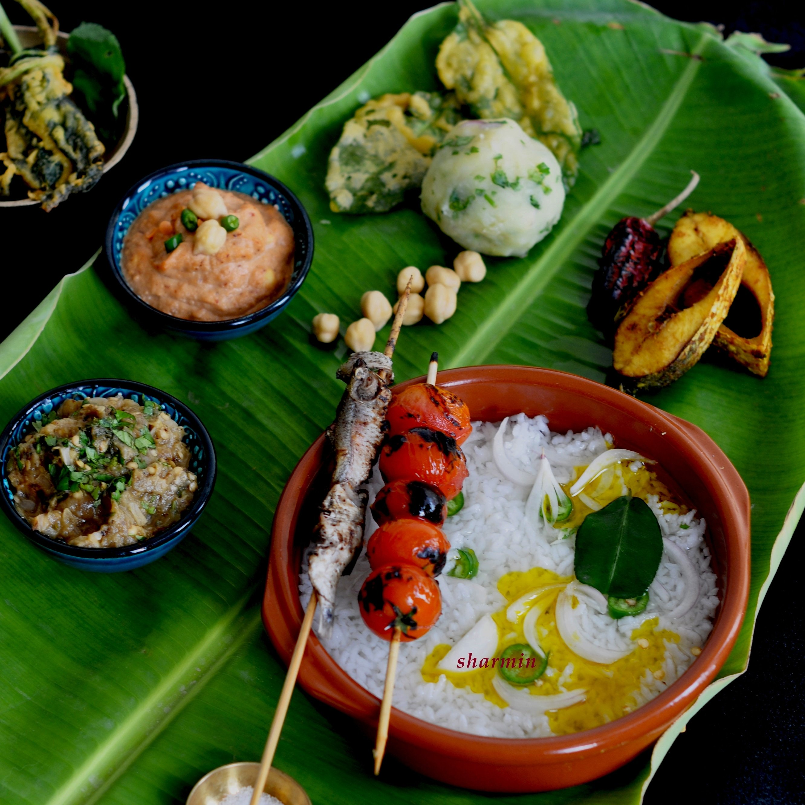

Assam is a state in northeastern India known for its wildlife, archeological sites and tea plantations. In the west, Guwahati, Assam’s largest city, features silk bazaars and the hilltop Kamakhya Temple. Umananda Temple sits on Peacock Island in the Brahmaputra river.
Folk Dance
Bihu is the most popular folk dance of Assam. Bihu dances are performed by young boys and girls during the Bihu festivities which represent youthful passion, reproductive urge and joy. It is characterized by brisk dance steps and rapid hand movement. Dancers wear traditional colourful Assamese clothing.


Satriya Nritya is the classic dance form of Assam which represents the Satriya culture, the basis of the religious and cultural fabric of Assam. It is one among eight principal classical Indian dance traditions. Whereas some of the other traditions have been revived in the recent past, Satriya has remained a living tradition since its creation by the founder of Vaishnavism in Assam, the great saint Srimanta Sankardeva, in 15th century Assam.
Dress
The Dhoti and Gamosa are said to be the native dress of the men of Assam. The Dhoti is used to cover the lower half of the body and is a well-known piece of clothing in other Indian traditions too. Wearing a Dhoti properly is not so easy and carrying it is also one tricky job. The Gamosa is a rectangular piece of cloth that is an important and significant part of the Assam culture.
The Mekhela Chador is the traditional dress for the women of Assam. It is worn by women of all ages except children. This two piece garment has a long piece of cloth that is draped from the waist downwards and is then folded into pleats and tucked in. This piece is called the Mekhela. The upper part of the dress is the Chador that is also a long piece of cloth whose one end is tucked into the Mekhela, and then the rest is wrapped around the body.
Cuisine
Tea or "Saah" in Assamese is an indispensable part of Assamese cuisine. It is served in form of Black tea, Milk tea, Spiced tea, Green Tea, Lemon tea etc.
The Assamese Thali comprises of plain steamed rice, a lentil preparation or "Daal", a mixed vegetable often called a "Labra", a variety of "pitika's" or mashed potatoes, brinjal, tomatoes etc, a dry vegetable preparation made with small potatoes or "Soru Aloo", Gourd, Bitter Gourd, Banana flower, a leafy vegetable preparation made with Lai Xaak, Fiddle Head Ferns or Dhekiya Xaak, Kosu Xaak or Colocassia leaves etc.
The food is usually served in bell metal utensils which are believed to be good for health and boosting up immunity. The most common dessert would be a rice pudding called "Payash". "Poitabhat" is a favourite dish in Assam during the summer season.

The cuisine is characterized by very little use of spices, little cooking over fire and strong flavors mainly due to the use of locally available exotic fruits and vegetables that are either fresh, dried or fermented.

Fish is widely used in the forms of Curry, Fry, Mash and Maas Pura cooked over fire. Meat includes Mutton, Chicken, Duck, Pigeon and Pork amongst a few communities.
Tourism
Kaziranga National Park

The Kaziranga National Park is home to two-thirds of the planet’s population of the one-horned rhinoceros. Apart from that, this national park is also a World Heritage Site and a major highlight on the Assam tourist places map. It’s vibrant, well preserved, sustained ecology, and versatile biodiversity is what contributes to keeping this place on the top of the list of tourist places in Assam. Other than the one-horned Rhino, the park draws its popularity from other pleasant surprises like the Swamp Deer, Elephants, Wild Buffalos, Chinese Pangolins, Bengal Foxes, Gibbons, Civets, Sloth Bears, Leopards, and Flying Squirrels to name a few.
Manas National Park
The next on the list of Assam places to visit is the Manas National Park, which is a UNESCO Natural World Heritage site, a Project Tiger Reserve, an Elephant Reserve, a Biosphere Reserve all in one, and the best tourist place in Assam! Being famous for the rare golden langur and the adorable red panda, Manas is one of the best national parks in Assam and even all of India
Kamakhya Temple

One of the 51 Shakti Peeths in India, the Kamakhya Temple carries a myth to protect devotees from evil eyes. It’s one of the most popular and famous tourist places in Assam for pilgrims and tourists alike owing to its amazing Tantric adoration. Located atop Nilachal Hills, this temple’s main deity is Lord Shiva and Daksha Yagna (Death Incarnation). This temple is certainly one of the most revered temples in Guwahati.
Majuli
Majuli’s eye-warming naturescapes make it one of the top tourist places in Assam. It is the world’s largest riverine island as well as one of the most important Satras established by Sankardeva and Madhavdev. The Majuli islands are spread over an area of around 452 sq km and most of these get submerged underwater during the monsoons, leaving the bigger islands like Kamalabari, Auniati, and Garamur on the surface. This is why it’s best to visit this place in Guwahati in May. This is undoubtedly among the best places to visit in Assam. Apart from having remarkable natural beauty, Majuli is also a birdwatcher’s paradise. A holiday with Assam tourism is incomplete without seeing one of the most beautiful places to visit in Assam.
Kakochang Waterfalls

Cascading down furiously between the rubber and coffee plantations of Jorhat, the Kakochang Waterfalls are a magnificent wonder of nature. The main waterfall is located 13 km from the Bokakhat in Jorhat and attracts tourists in great numbers year-round. Apart from providing a refreshing retreat and a great subject for shutterbugs, this waterfall gives splendid views of the ruins of Numaligarh and lush green tea plantations. Located close to the Kaziranga National Park, Kakochang is among the must-visit points of interest if you are planning with Assam tourism.
Orang National Park

Among other Assam places to visit is the Orang National Park or Rajiv Gandhi National Park nestled quietly on the northern shores of the Brahmaputra. It’s the popular home of Assam’s one-horned rhinos, and though small in size, this park is among the most unique Assam destinations. It provides shelter to more than 50 species of fish and is unbelievably rich in fauna, which contribute majorly to its bewitching landforms and scenic charm. Undoubtedly, Orang National Park is one of the most popular tourist places of Assam.
Guwahati Planetarium
Astronomy lovers who visit Assam absolutely love this one attraction. The Guwahati Planetarium attracts a large number of visitors every year with its myriad avenues for space exploration and activities for kids and space enthusiasts. It’s a great place for young minds that want to learn surprising facts about the universe in a fun and interactive way. This popular astronomical research centre also hosts a number of seminars and exhibitions to let people witness rare phenomenons like solar eclipses and meteor showers
Panimoor Falls

Despite being situated over a 100 km away from the town, this waterfall is one of the major attractions in Haflong. If you’re a movie buff and that entices you more than nature, you’d be glad to know that a few shots from Rangoon were shot here. So, just pick your camera and make sure you stop by here for capturing a few of your own special moments.